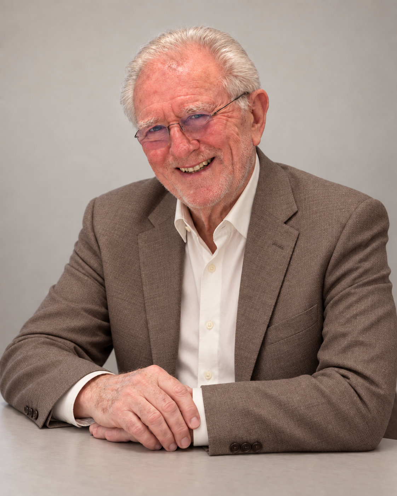

Diretor Executivo / CEO
Professor Zorland
Diretor Executivo
Responsável pela estratégia geral, pela filosofia de investimento e pelo desenvolvimento dos negócios globais da Aurevia. Possui ampla experiência nos mercados de capitais e na gestão de ativos, com foco na alocação de longo prazo, na gestão de riscos e em oportunidades de investimento em diferentes mercados.
Dedica-se a conectar as oportunidades econômicas do Brasil aos mercados globais de capitais, desenvolvendo para os clientes uma estrutura de gestão de ativos pautada pela disciplina, pela resiliência e pela criação de valor no longo prazo.